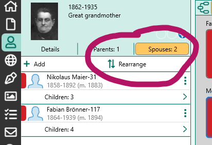
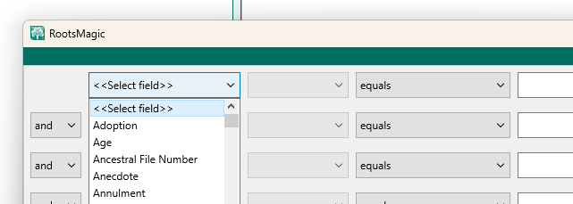
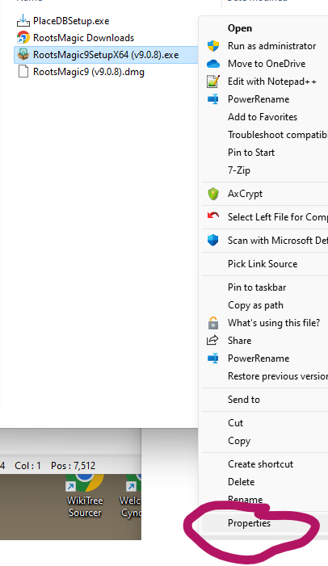
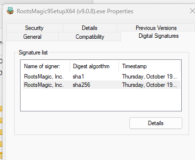

Home
RootsMagic Tips and Tricks
Applies to RootsMagic v9 software, published by
RootsMagic, Inc.
This page updated: 2023-11-30
1- Thesaurus
Database items are sometimes referenced by different names in different contexts.
Here is a list of items that may be confusing-
Thesaurus
2- Sort date
Commonly misunderstood feature.
A Date and a Sort date are associated with each Fact, Name and Association. In the Fact shown below, the top circled field is the "normal" Date, the bottom one is the Sort date.

The Sort date is used to sort:
- Facts in the fact list
- People in the people list, when sorted by any Fact or Name date
Currently not used : (but should be!!!!!!!!!)
- By the tools "Rearrange children" or "Rearrange spouses".
- By the buttons "Rearrange children" or "Rearrange spouses".


A Sort date is never displayed in reports.
Sort dates are supported by GEDCOM 7.0, and by many other genealogy apps.
Only used for sorting items in the RM display and in reports.
The Sort date is, by default, set to the same value as the normal date (except for qualitative date modifiers)
The Sort date may be edited to any desired value.
IMHO, no evidence is needed to assign a Sort date when a date is missing.
Currently not used-
3- Sorting multiple facts on the sane day
Dates in RM are are not TimeStamps and are limited to calendar dates. No clock time value is allowed.
When more than one event occurs on the same calendar day and the order of the events is known, use the dashed sort date feature.
For a clear explanation, see- RM v9 help: Date formats, last section: Sorting events on the same date.
Quick example-
The normal date values for the events may all be the same, but the sort date for each event would modified by adding -1, -2 -3 etc
For example, if four events happened on May 1, 1950, the sort dates are all by default, the same as the normal date: 1 May 1950.
Change the sort dates to:
1 May 1950-1
1 May 1950-2
1 May 1950-3
1 May 1950-4
The corresponding facts will be sorted accordingly.
Note that the character entered by the user is the standard hyphen "-", but it is changed to an en-dash "–" when displayed. (Similar to how RM handles date ranges)
For info on dashes and hyphens, see Em Dash (—) vs. En Dash (–)
4- Advanced Search primary field values
The Advanced Search feature in RM allows the user to create a query to find Persons-

The first field, at first glance, appears to be a list of all the fact types used in the database, standard and user created. However, there are a number of items in the list that aren't Facts.
The Person edit screen list several types of items:
Facts (also called Events)
Family Facts (these are actually linked to family database objects)
Names (and Alternate Names)
Shared Facts (also called Witnessed Facts )
Associations
The non-fact items are listed here for reference=
Given name(s)
Given (or Nickname)
Surname
Surname (Birth or Marr) [not alt name of type married]
Prefix
Suffix
Nickname
Any Fact
Color coding
Date edited
FamilySearch ID
Living flag
Number of children
Number of sets of parents
Number of siblings
Number of spouses
Record number
Sex
Source (family)
Source (general)
Notice that some items may not be searched for:
Shared Facts
Associations
6- Adding media files to RM after download by browser
These instructions are for the current version (2023-11) of Chrome on Windows. Probably similar for MacOS and Edge.
When a file is downloaded in Chrome, after the file save dialog is closed, a small pop up window appears near the upper right corner of the browser window.

If one has the RM "Media=>Add Media=>Drop New Media" "drag and drop target" displayed, one can drag the small pop-up window onto the RM drop target to add the downloaded file to RM media.
This window disappears as soon as any action other than dragging is taken, like switching windows, clicking in the browser etc. So if the RM drop target is not already visible on the screen, the window will vanish before you can set it up.
No worries- instead, set up the RM drop target, position the window so it will be visible when the focus is switched to the browser, and then in the browser, click the "downloads" button. This will display a list of recent downloaded files. You can drag the listed file that you want to the RM drop target.

This illustrates the dragging of a file listed in the downloads list to the RM Drop Media Target area.

7- Opening a second instance of the same database
RM is not designed to do this. In fact it is designed to prevent this. SQLite has no problem with multiple processes accessing the same file, Database writes are serialized by using file locking.
There are easy workarounds to RM's prohibition to opening the same file twice but one will encounter numerous "file locked" error messages. I have not seen any problems caused by this, but it does not inspire confidence.
A simple and robust alternate method is to take a recent copy of the database file, rename it to something like "COPY YYYY-MM-DD.rmtree" and change its properties to Read Only. (Right click the file in Windows File Manager and select Properties.)>

Then when you want to see a part of the database that is inaccessible, one can open this Read Only "COPY" database in the same instance of RM. It won't be current, but for many situations, that will be OK.
You won't be able to make accidental changes to the Read Only database, so your modifications will always go to the correct open file.

Unfortunately, a modal window, citation entry, for example, will still prevent you from interacting with the other database's windows. You'll need a real second instance of RM to overcome that. But perhaps the COPY database window can be arranged on the screen to be visible while working in the modal window.
8- Online resources for RootsMagic
From the SW Publisher
Main website
https://www.rootsmagic.com/
Publisher's user forum
https://www.facebook.com/groups/RootsMagicUsers
https://community.rootsmagic.com/
RM Help- ver 9
https://help.rootsmagic.com/RM9/index.html
RM Help- ver 8
http://wiki.rootsmagic.com/wiki/RootsMagic_8:RootsMagic_8
Independent Sites
Users forum
https://rootsmagic-users.groups.io
Premier site for discussion of RootsMagic direct SQL access
https://sqlitetoolsforrootsmagic.com/
Reddit
https://www.reddit.com/r/RootsMagic/
9- Confirm that a downloaded software installer is uncorrupted
One often sees posts in forums that users, when they are having software problems, have suspicions that the downloaded installer they are using is somehow corrupted.
This can easily be ruled out by checking the installer file's digital signature. If the signature is OK, one can be assured that the file contents are OK, or at least they have been unchanged since creation by the publisher. Same method can be used to check the integrity of any signed exe or dll file.
To check an installer's digital signature-
Find the installer exe file in Windows File Manager.
Right click the installer exe file and select Properties from the end of the menu.

Click on the Digital Signatures tab in the Properties window.
Select the sha256 item in the list and click the Details button.

Examine the Digital Signatures Details window and look for "Digital Signature OK".

The "Digital Signature OK" means that the installer file on your computer is exactly the same as the file created by RootsMagic Inc. Not a single bit has been changed.
10- Consider using Git version control to track media files
External file names and locations are tracked by RootsMagic, but the files' contents are not.
See Git for Windows for the Windows download.
Pro-
- All changes to external file names and locations can be reviewed and confirmed.
- Another back up of your file data.
- Deletion of files or unexpected modification are made apparent.
- It's free and you will learn something if you don't already use Git.
Con-
- Git is designed to be used with text files. Most media files in RM are binary. However, it still works great.
- Git does not preserve the file system time stamps for files.
11- Media folder and relative paths
Media files can be linked from anywhere. The program specified media folder is a suggested location to centralize all media. It is also the base directory that opens when one adds new media.
This is based on RM 8and9's Relative path start points-
? media folder as set in RM preferences
~ home directory (%USERPROFILE%)
* RM main database file location
If the file is not "below" one of those three start points, it's listed in the database as an absolute path.
These are expanded when found in the first position of the stored path. All of the path's in my database start with ?, meaning they are all in the Media folder.
I've never tested the priority, but I suspect it is Media Folder first. (This guess is based on the fact that all of my media file paths start with ?, meaning they are in the media folder.)
One nice feature is that if you move the database and media folder to another computer or drive, one can simply reset the Media folder preference item to the new folder location and you're done.
12- Citation and source fields are text
Citation and source fields come in several types- Names, dates, places.
Dates are handled the same as dates in facts, places and names are not. Places are not connected to the places in the places tab. Names are not connected with other names in the DB. They are just text.
The type that is assigned just specifies the type of special functions that can be applied to them within the sentence/source language.
13- Names, Primary and Alternate
The items listed in a person's edit page may be of three different types-
Facts (also called: Events) and Shared Facts
Names
Associations
Regarding Names-
The primary name item corresponds to the name at the top of the Edit Person window's listing.
A person may be assigned more than one name, one of which will be primary.
For Names, the primary one is Listed in the Edit Person window as "Primary Name" and the others are listed as "Alternate Name". It's a bit odd in that for other facts, all facts of the same type have the same fact name in the listing. For instance, if there are multiple Residence facts, all will be listed as Residence even if one is made primary.
An Alternate name may be changed to the Primary name using the primary check box in the alt name's edit panel.
Clicking on the Name at the top of the listing allows one to attach-
Note, Source, Media, Tasks, and address to the PERSON.
Clicking on the Primary Name fact in the body of the listing allows one to attach-
Note, Source, Media and Tasks to the NAME item.
Where one should attach sources- to the Person or to the Name is I think a philosophical question. I attach to the name that is being documented.
Also note that the Primary Name or Alternate Name fact allows setting Name type, Proof, Date and Sort date. Not quite the same as other facts, but close. Names cannot be shared. Alternate Name also allows setting of the Primary and Private flags.
(That the Primary flag is displayed on Alt Names only, I understand. I'm not clear why primary names can't be made private...)
All of my Alternate Names have sort date (and actual dates when they are know). They are generally used at a certain time, marriage for instance.
Most of my primary names don't have a date or sort date. The primary names that do have dates are special cases where I am not using the person's birth name as primary. The Alt name of type Birth I set to same date as birthday, the Primary name of different type (Immigrant name, AKA) is set to the date it is first used.
14- Media Tab: Force synchronization of the left and right hand panels
A current bug which I find very annoying appears in the Media Tab.
There are time when the information in the left hand and right hand panels is not referring to the same media item.
When this happens, one can force a refresh of the right hand panel so that it shows the information corresponding to what is shown on the left side.
Procedure:
Use the mouse to "Right-Click" the media item on the left hand side panel.
The "context menu" is displayed. Do not select an item from this menu
Instead, click elsewhere to dismiss the menu.
The right hand side is refreshed and now show the info corresponding to the left hand side panel.
Note: One must use the mouse to display the context menu. The context menu key on the keyboard does not work in RM.